Para Paula ♡
6 meses de nosotros
23.03.2026 — 23.09.2026
Hay historias que no se cuentan, se viven… y la nuestra es una de ellas.
Todo comenzó en Instagram…
Todo empezó con un simple mensaje, después otro, y cuando nos dimos cuenta ya teníamos ganas de seguir hablando todos los días.
Quién diría que algo tan sencillo iba a terminar convirtiéndose en algo tan bonito para los dos… y que iba a terminar queriéndote tanto. ❤️
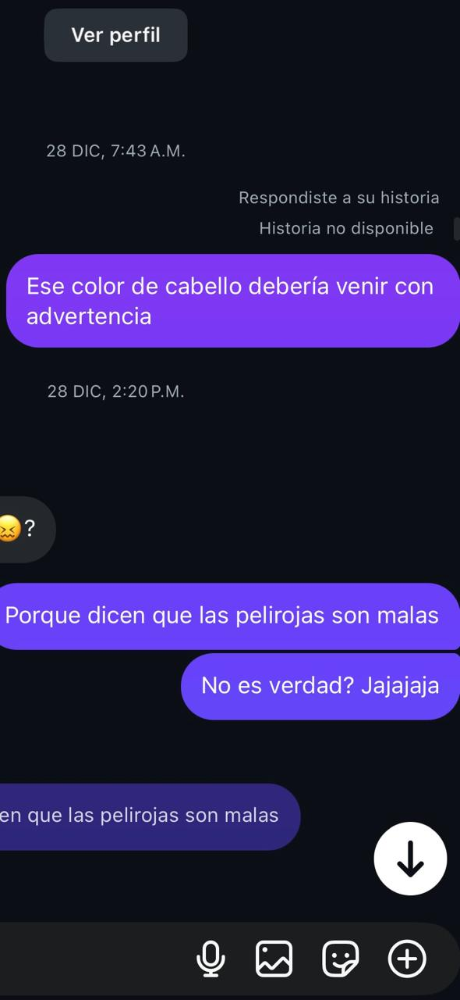
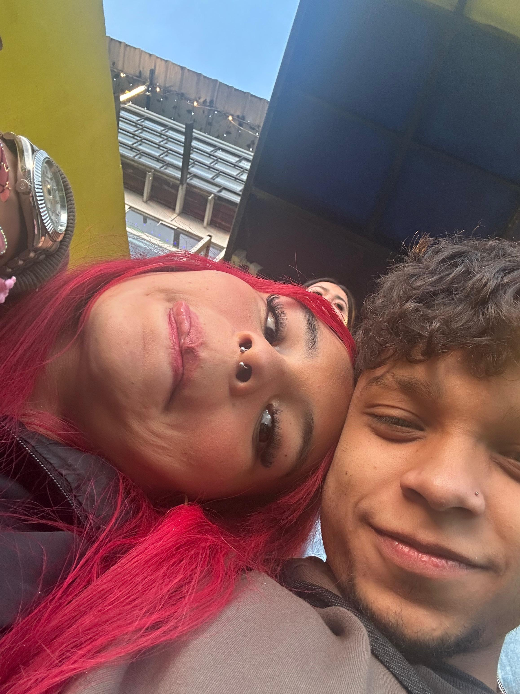
Y después llegó aquel primer mes…
El picnic.
Quizás para alguien más solo fue un picnic, pero para mí fue uno de esos días que se quedan guardados en mi corazon por siempre. Estar contigo, compartir ese momento y celebrar el primer mes juntos hizo que ese día fuera todavía más especial. ❤️
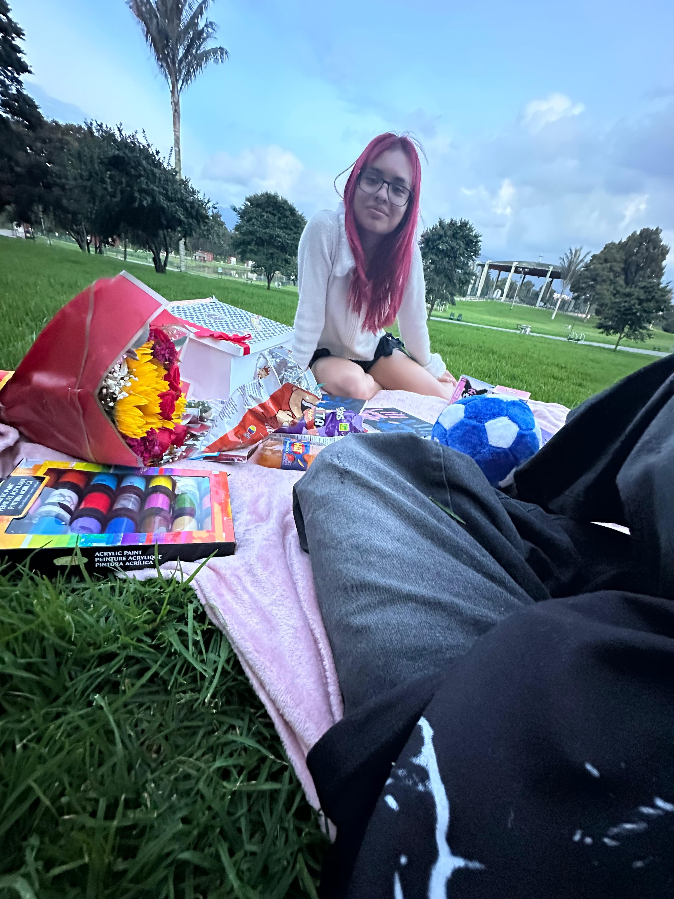
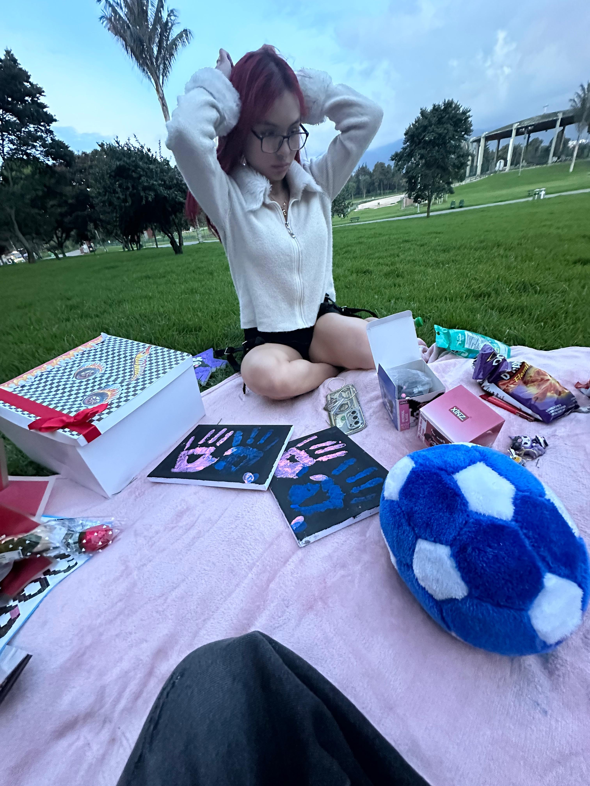
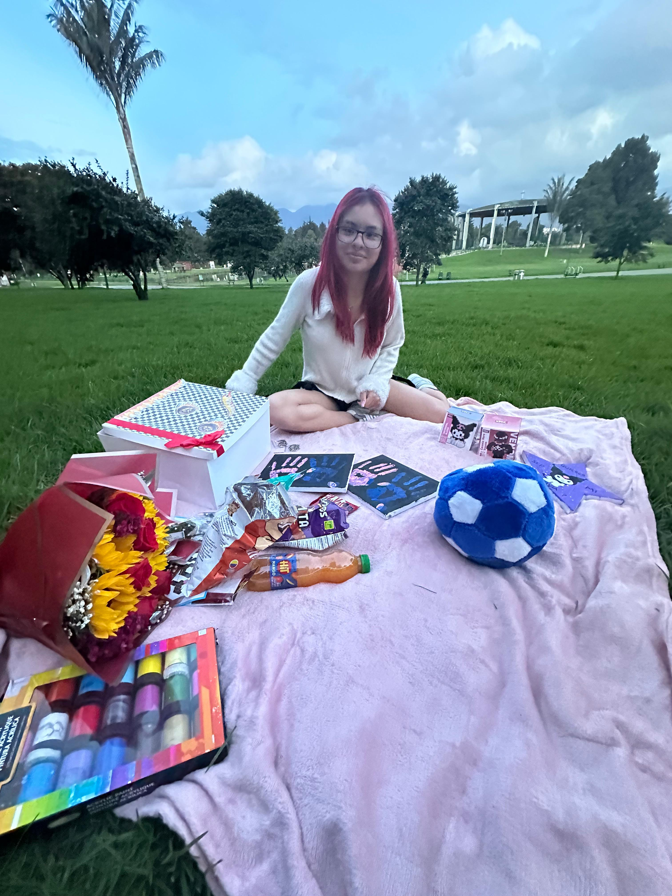
Capítulo I
Hay canciones que me recuerdan a cómo empezó todo.
Apareciste cuando no estaba buscando esto… y terminé encontrando algo que no quería perder.
Capítulo II
Te Quiero Amor
De todas las personas que podía conocer, qué bonito que hayas sido tú.
Capítulo III
Enamorándome
Y sin darme cuenta, me estaba enamorando.
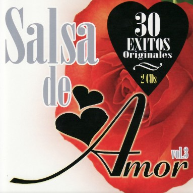
Tus ojos…
Esa mirada particular que tienes, esa mirada que siento que tienes solo conmigo.
En tus ojos, encuentro mi lugar favorito.
Nuestro recuerdo favorito
Salitre Mágico 🎢
De todos los lugares, de todos los días y de todos los momentos… este es uno de los que guardo con más cariño.
[VIDEO DE SALITRE MÁGICO]
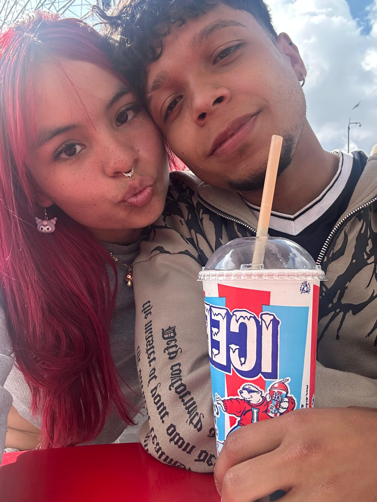
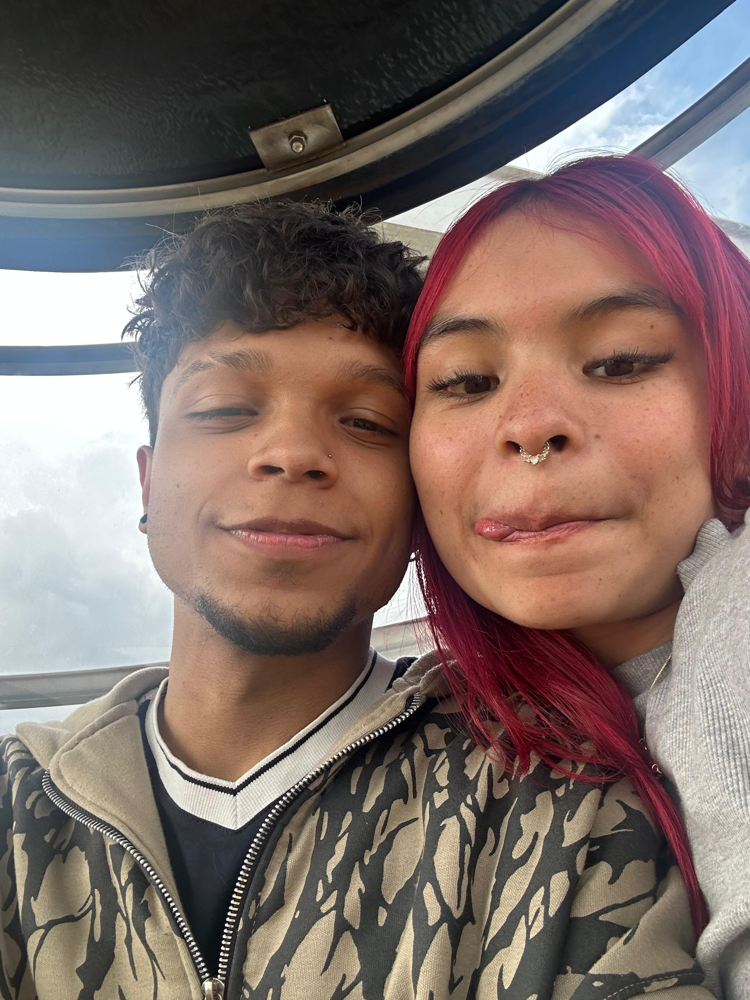
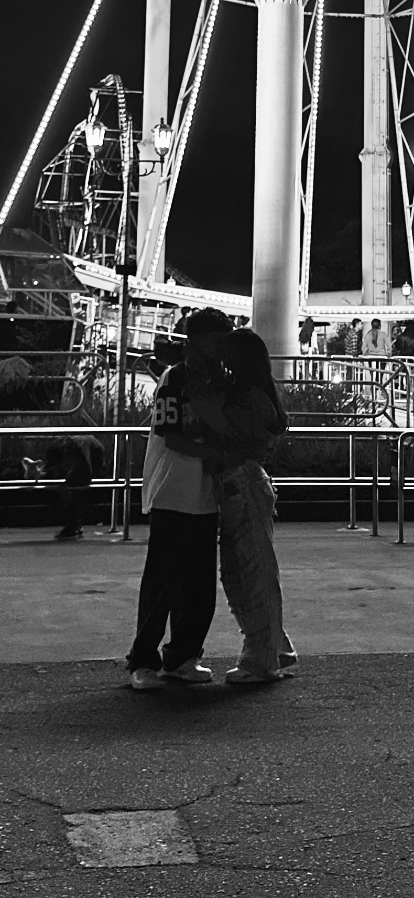
Capítulo IV
Lo que nunca supe decir
Hay cosas que nunca supe cómo decirte… así que dejé que una canción hablara por mí.
6 meses de nosotros
Seis meses de risas, locuras, planes, abrazos, besos y momentos que siempre voy a atesorar.
Y quiero que sean muchos más.
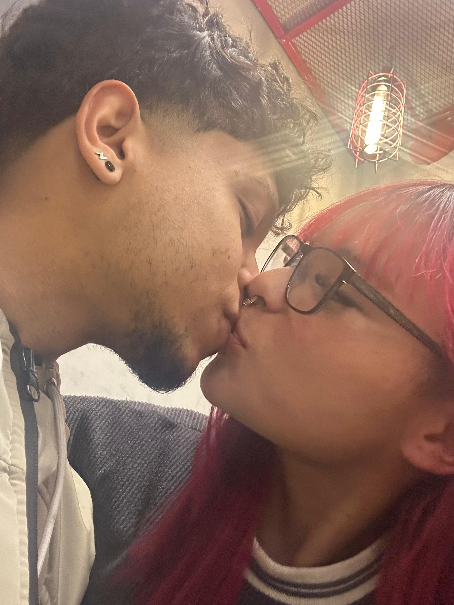
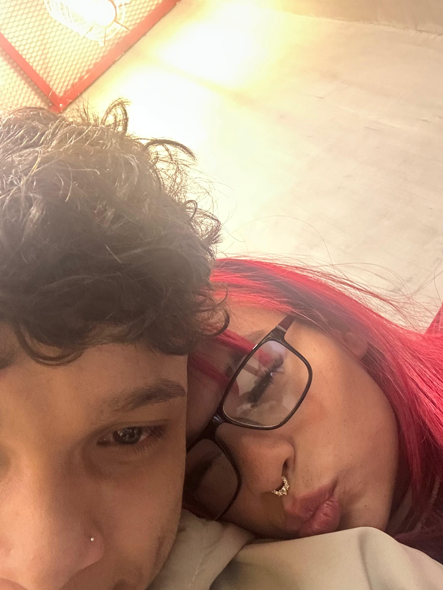
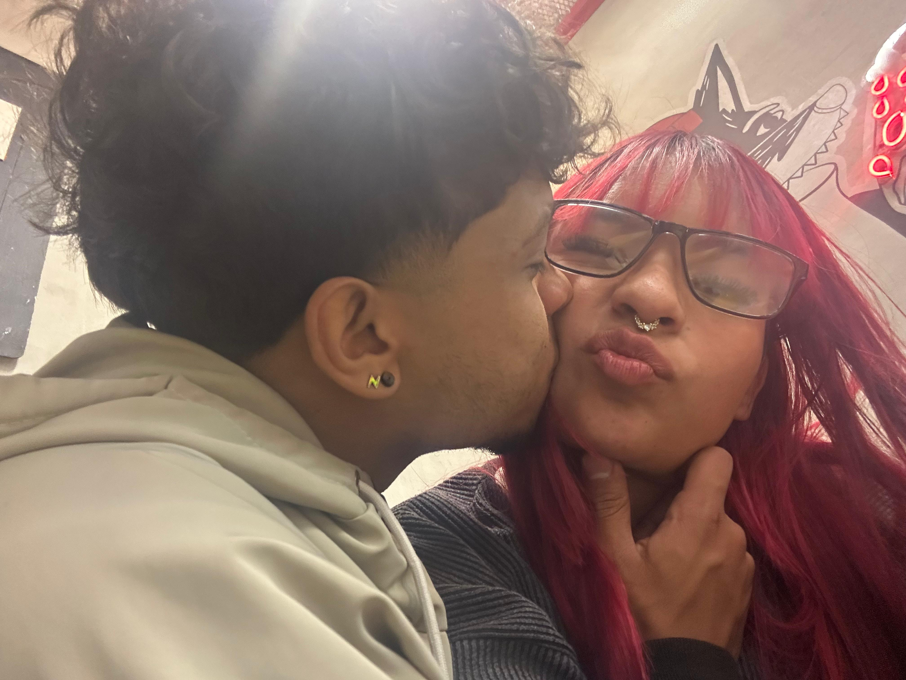
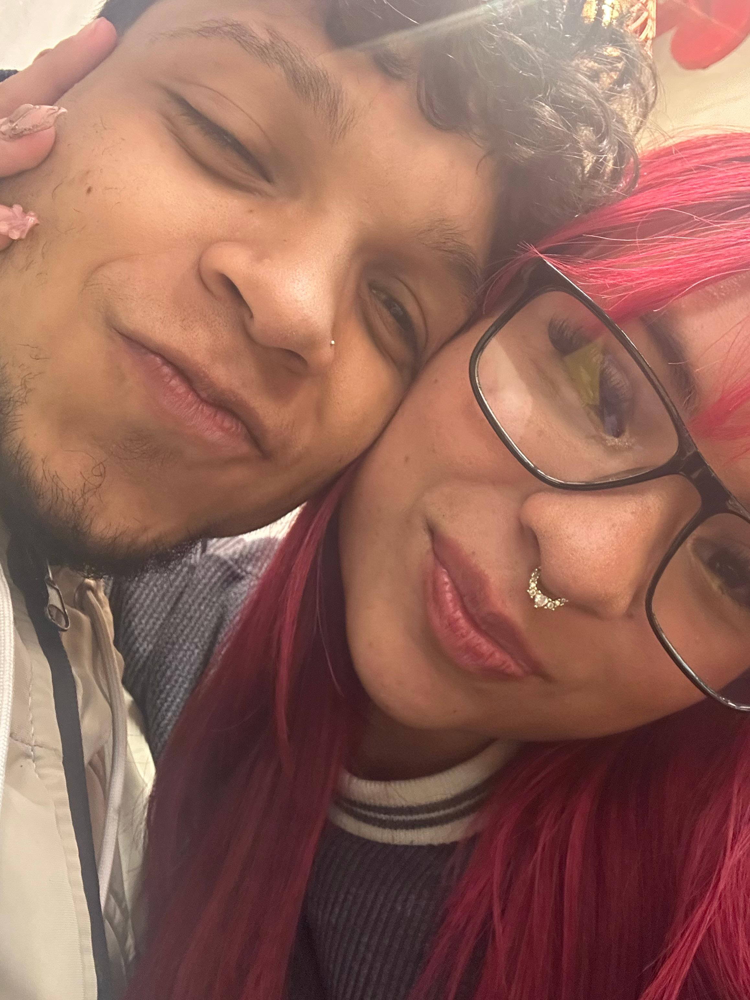
Incluso ahora…
Sé que ahora estamos pasando por un momento distinto y que necesitamos este tiempo. Pero no es fácil, porque todavía te quiero y porque todo lo que hemos vivido sigue significando muchísimo para mí.
Porque incluso en los momentos difíciles, lo que siento por ti no desaparece.
Paula…
Es difícil explicarlo con pocas palabras, pero aquí va mi intento:
- Me encantan tus ojos, pero más me encanta cómo cambian cuando estás feliz.
- Me encanta esa forma que tienes de mirarme que a veces hace que se me olvide hasta lo que estaba diciendo.
- Me encanta tu forma de ser, incluso esas pequeñas cosas tuyas que quizás tú ni notas.
- Nunca pensé que alguien pudiera llegar a importarme tanto ni que pudiera sentirme así con una persona.
- Y aunque pase el tiempo, sigo encontrando nuevas razones para quererte un poquito más.
Te amo. ❤️
Paula,
No sé si existe una forma perfecta de decir todo lo que tengo en la cabeza y en el corazón, así que simplemente voy a decirte lo que siento, tal como me salga.
Te amo. Y creo que una de las cosas más bonitas de haberte conocido es que contigo entendí que el amor también está en esas cosas que parecen pequeñas: en nuestras conversaciones, en las risas por cualquier bobada, en salir juntos, en esos planes que quizás no parecían gran cosa pero que terminaron convirtiéndose en recuerdos que guardo muchísimo.
También me quedo con la forma en que me haces sentir cuando estoy contigo. Con tus miradas, tus gestos, tus ocurrencias y hasta esas pequeñas cosas que haces sin darte cuenta. Son detalles que quizás para ti pasan desapercibidos, pero que para mí se volvieron parte de lo que más quiero de nosotros.
Estos seis meses han significado muchísimo para mí. Hemos vivido momentos muy bonitos, hemos aprendido el uno del otro y también hemos tenido momentos que no han sido tan fáciles. Y aunque ahora estemos pasando por una etapa diferente, eso no borra todo lo que siento ni todo lo que hemos construido juntos.
No quiero que estas palabras se sientan como una forma de presionarte. No quiero apresurar lo que necesite tiempo. Solo quería que supieras que, a pesar de todo, sigo aquí, con el mismo cariño y con las ganas de que algún día podamos volver a mirar todo esto y sentir que valió la pena haberlo intentado.
Si algo tengo claro después de estos seis meses, es que me alegra muchísimo haberte encontrado. Y si me preguntaran qué quiero para nosotros, no tendría una respuesta complicada: me gustaría que, cuando estemos listos, podamos volver a elegirnos.
Gracias por estos seis meses, por cada recuerdo, por cada risa y por todo lo que me has hecho sentir. Te amo, Paula. ♡
— Steven
Nuestros momentos
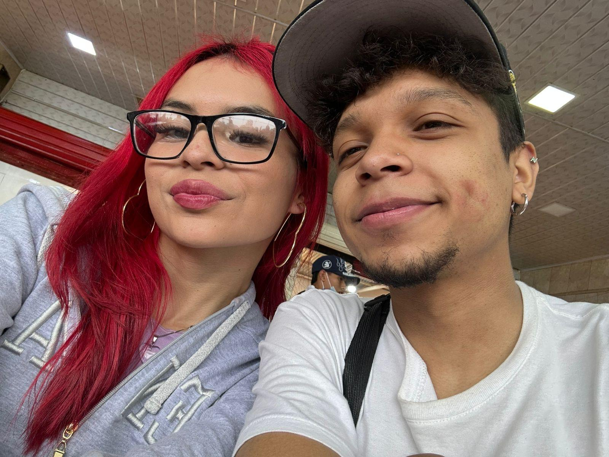
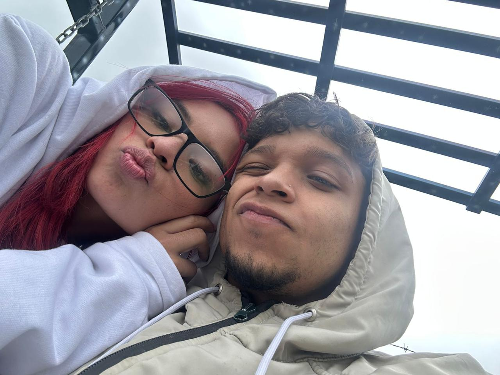
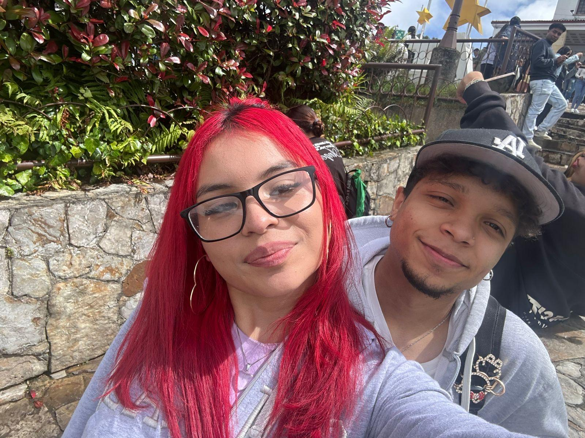
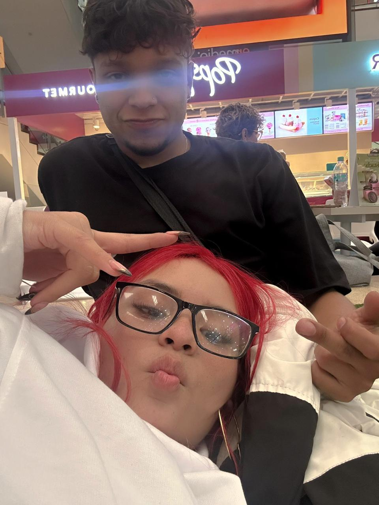
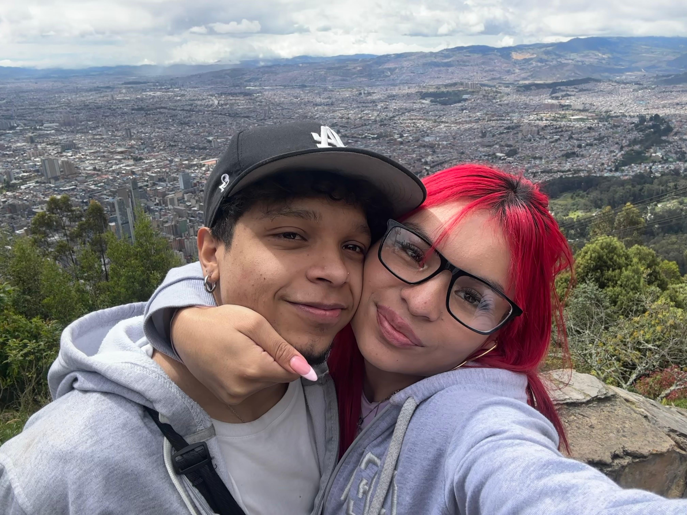
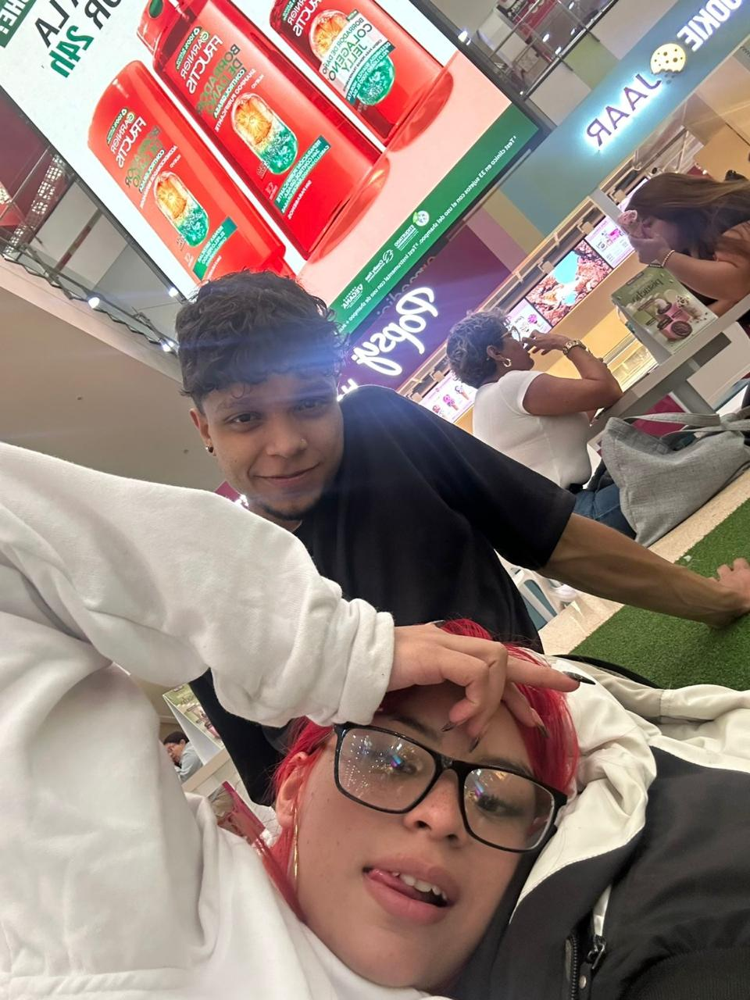
Contigo, todo es mejor.
Un pequeño recuerdo más antes de llegar al final JAJAJAJA.
[VIDEO DE NOSOTROS]
Mi lugar seguro
Después de todo lo que vivimos, si tuviera que explicar qué eres para mí…
Eres mi lugar seguro.

Paula…
¿Seguimos siendo nosotros?
Qué bonito…
Entonces todavía nos quedan muchísimas historias por escribir.
Esto apenas comienza. 💜
6 meses…
Y aún falta todo lo que nos queda por vivir.
Steven ♡ Paula
♡